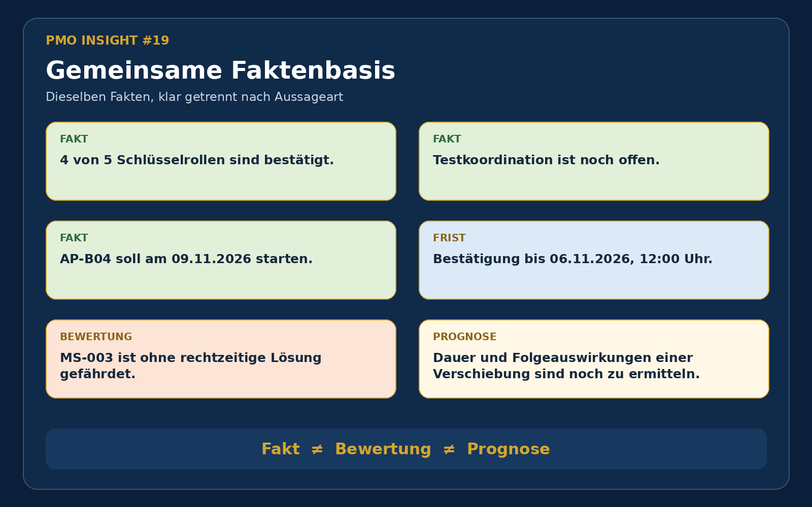
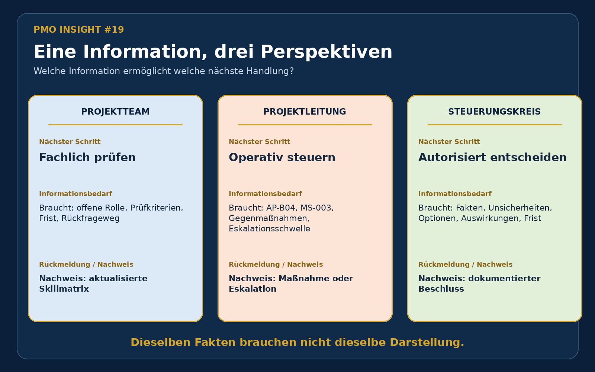
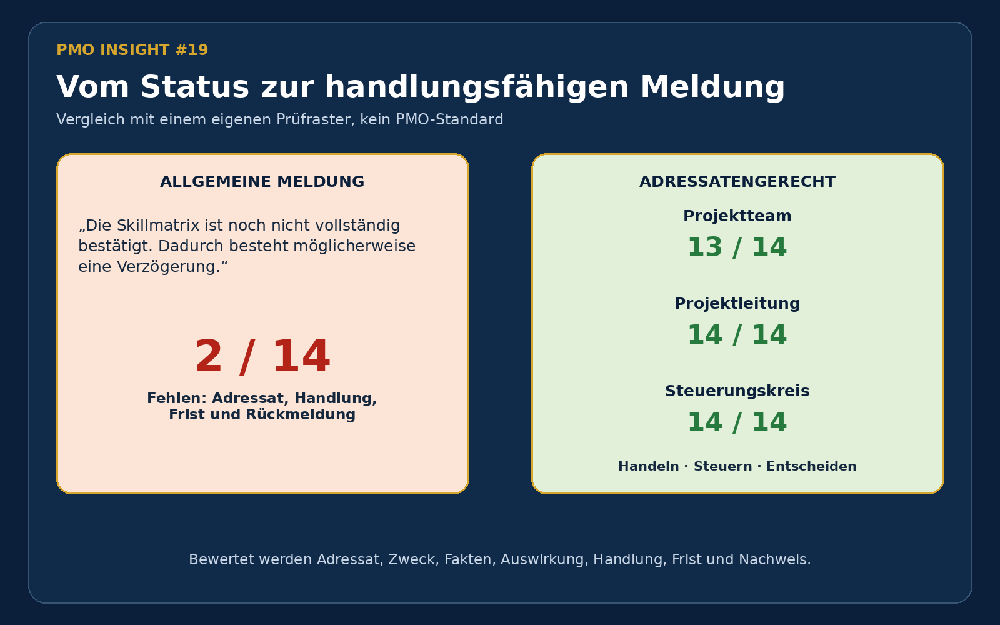

Hinweis: Alle Rollen, Termine, Statusangaben, Optionen und Bewertungen sind fiktiv. Das Prüfraster wurde für diese Lern- und Arbeitsprobe entwickelt und ist kein allgemeingültiger PMO-Standard.
Gemeinsame Faktenbasis
Unterschiedliche Meldungen dürfen nicht zu unterschiedlichen Wahrheiten führen
Für das Arbeitspaket AP-B04 ist eine von fünf Schlüsselrollen noch nicht bestätigt. Die Rolle Testkoordination bleibt offen. AP-B04 soll am 09.11.2026 beginnen; die fachliche Bestätigung wird bis 06.11.2026 benötigt. Ohne rechtzeitige Lösung ist der Meilenstein MS-003 gefährdet. Dauer und Folgeauswirkungen einer Verschiebung sind noch zu ermitteln.

Drei Rollen
Dieselben Fakten unterstützen drei verschiedene nächste Schritte

Vorher-Nachher-Prüfung
Eine korrekte Statusmeldung kann trotzdem niemanden handlungsfähig machen
„Die Skillmatrix ist noch nicht vollständig bestätigt. Dadurch besteht möglicherweise eine Verzögerung. Die zuständigen Rollen arbeiten an der Klärung.“
Die Meldung benennt ein Problem, aber weder Adressat, konkrete Handlung, Frist noch Rückmeldung. Geprüft wurden Adressat, Zweck, Faktenbasis, Auswirkung, Handlung oder Entscheidung, Frist und Nachweis.
| Meldung | Ergebnis im Lernraster | Was sie ermöglicht |
|---|---|---|
| Allgemeine Meldung | 2 von 14 | Nur grobe Kenntnisnahme |
| Projektteam | 13 von 14 | Fachliche Prüfung und Dokumentation |
| Projektleitung | 14 von 14 | Operative Gegenmaßnahme oder Eskalation |
| Steuerungskreis | 14 von 14 | Autorisierte Entscheidung mit Beschlussnachweis |

Entscheidungsvorbereitung
Für das Gremium wird aus dem Status eine formelle Vorlage
Die Entscheidungsvorlage stellt drei Prüfoptionen gegenüber. Eine konkrete Verzögerungsdauer wird nicht unterstellt. Neue Termine und Auswirkungen auf Folgearbeiten müssen vor einem realen Beschluss geprüft werden.
Option A
Fachressource priorisieren. Verfügbarkeit und Folgen für das abgebende Vorhaben müssen bestätigt werden.
Option B
Meilenstein verschieben. Neue Termine und Abhängigkeiten müssen ermittelt werden.
Option C
Mindestumfang anpassen. Fachliche Freigabe, Nacharbeit und Risikoprüfung sind erforderlich.
Lernerkenntnis
Was ich daraus mitnehme
Das PMO unterstützt, indem es Fakten, Bewertungen und Prognosen trennt, Informationsbedarf und Entscheidungsgrenzen sichtbar macht und die erwartete Rückmeldung dokumentiert.
Eine gute Meldung garantiert weder eine richtige Entscheidung noch eine tatsächliche Reaktion. Sie kann aber zeigen, ob die erforderlichen Informationen für die nächste Aufgabe oder Entscheidung vorhanden sind.
Arbeitsprobe
Dateien und Einordnung
Portfolio-Grafiken
Drei Bilder zeigen Faktenbasis, Rollenperspektiven und den Vorher-Nachher-Vergleich.
Grafik öffnenEntscheidungsvorlage
Kompakte PDF mit Entscheidungsfrage, Optionen, offenen Prüfungen und Beschlussfeld.
PDF öffnen